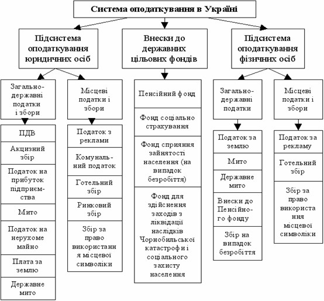
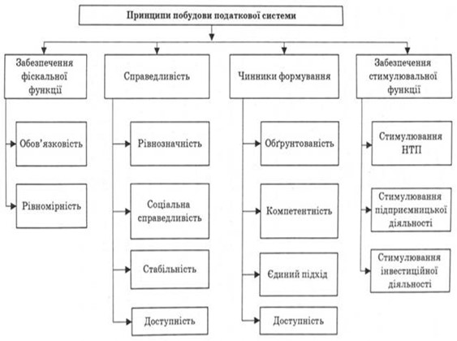
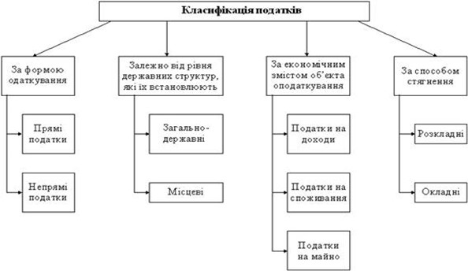

План
1. Сутність податкової системи.
2. Принципи побудови системи оподаткування.
3. Види податків та джерела їх сплати.
1. Сутність податкової системи
Система оподаткування – це сукупність податків і зборів (обов’язкових платежів) до бюджетів різних рівнів, а також до цільових фондів.
Податковий кодекс України (ПКУ) виокремлює два види податкових платежів – податок та збір.
Податковий кодекс України констатує, що податком є обов’язковий, безумовний платіж до відповідного бюджету, який справляється з платників податку. Податки – це платежі, що не мають цільового призначення, а використовуються для утримання державних структур і для фінансового забезпечення виконання ними своїх функцій.
Під збором (платою, внеском) розуміється обов’язковий платіж до відповідного бюджету, що справляється з платників зборів, з умовою отримання ними спеціальної вигоди, зокрема внаслідок вчинення на користь таких осіб державними органами, органами місцевого самоврядування, іншими уповноваженими органами та особами юридично значимих дій.
Плата передбачає еквівалентність взаємовідносин підприємств з державою і є фактично розрахунком за використані блага або природні ресурси (воду, землю, природні ресурси, лісові ресурси, користування надрами).
Відрахування мають цільовий характер (на пенсійні заходи, соціальне страхування тощо). Їх відносять на витрати виробництва і включають у собівартість продукції.
Мито стягується з юридичних та фізичних осіб за здійснення спеціально уповноваженими органами дій і видачу документів, що мають юридичне значення. Так, митними органами стягується платіж за ввезення і вивезення товарів (перевезення через митний контроль держави), судами стягується державне мито за подання позову тощо. Мито – непрямий податок, що сплачується за товари та інші предмети, які перетинають митний кордон України, і включається у ціну товару. На практиці застосовують кілька видів мита: ввізне, вивізне, сезонне, спеціальне, антидемпінгове, компенсаційне.
Податкам властиві певні риси, що відрізняють їх від понять «плата», «платіж», «відрахування».
Характерні особливості податку:
1. Обов’язковість платежу. Ця ознака виявляється у встановленні відповідальності платника у разі порушення визначеного терміну, розміру податку чи ухиляння від його сплати.
2. Перехід права власності. При сплаті податків частина доходу платника переходить у власність держави.
3. Індивідуальна безоплатність. Збираючи податки, держава не зобов’язується надавати кожному платнику послуги в еквіваленті сплачених податків.
4. Регулярність сплати. Податок є регулярним платежем, тобто сплачується у чітко встановлений законодавством термін.
5. Відсутність цільового призначення. Податки, формуючи дохідну частину бюджету, не мають цільового спрямування, а використовуються на фінансування потреб, встановлених державою
Суспільне призначення податків виявляється в їх функціях, серед яких головними є:
- фіскальна функція - полягає у мобілізації коштів у розпорядження держави для забезпечення виконання її функцій; податки забезпечують формування дохідної частини бюджету. Реалізація податками фіскальної функції створює об’єктивні умови для формування матеріальної основи функціонування суспільства. Для забезпечення наповнення бюджету коштами податкові платежі мусять відповідати таким вимогам, як постійність, стабільність, рівномірність;
- регулююча функція - полягає у здійсненні через податкову систему впливу на показники діяльності підприємства; податкові платежі є дієвим інструментом впливу держави на суб’єктів господарювання. За допомогою податків відбувається перерозподіл вартості національного доходу між державою та її суб’єктами, тому податки впливають на діяльність платників податків. Регулююча функція податків реалізується через визначення об’єкта оподаткування, джерел сплати податку, встановлення ставок податків і терміну сплати податку, надання податкових пільг, визначення штрафних санкцій за порушення податкового законодавства;
- соціальна функція - податки підтримують соціальну рівновагу шляхом співвідношення доходів окремих соціальних груп з метою пом’якшення нерівностей між ними
Принципи оподаткування:
1. Принцип справедливості - кожен громадянин держави повинен брати участь у підтримці своєї країни по можливості та відповідно до доходів, які він отримує, під охороною держави.
2. Принцип визначеності податок, що сплачується громадянами, має бути точно визначеним. Час його сплати та розмір мусять бути відомі платникові й усім, хто захоче знати.
3. Принцип зручності будь-який податок повинен стягуватися у зручний для платника час і спосіб.
4. Принцип економії будь-який податок має формуватися так, аби витрати на його вилучення були мінімальними.
2. Принципи побудови системи оподаткування
Стосовно законодавчого закріплення принципів оподаткування в Україні, то відповідно до положень статті 3 Закону України "Про систему оподаткування" принципами побудови системи оподаткування в Україні є:
- стимулювання науково-технічного прогресу, технологічного оновлення виробництва, виходу вітчизняного товаровиробника на світовий ринок високотехнологічної продукції;
- стимулювання підприємницької виробничої діяльності та інвестиційної активності - введення пільг щодо оподаткування прибутку (доходу), спрямованого на розвиток виробництва;
- обов'язковість - впровадження норм щодо сплати податків і зборів (обов'язкових платежів), визначених на підставі достовірних даних про об'єкти оподаткування за звітний період, та встановлення відповідальності платників податків за порушення податкового законодавства;
- рівнозначність і пропорційність - стягування податків з юридичних осіб здійснюються в певній частці від отриманого прибутку й забезпечення сплати рівних податків і зборів (обов'язкових платежів) на рівні прибутки і пропорційно більших податків і зборів (обов'язкових платежів) - на більші доходи;
- рівність, недопущення будь-яких проявів податкової дискримінації -забезпечення однакового підходу до суб'єктів господарювання (юридичних і фізичних осіб, включаючи нерезидентів) при визначенні обов'язків щодо сплати податків І зборів (обов'язкових платежів);
- соціальна справедливість - забезпечення соціальної підтримки малозабезпечених верств населення шляхом запровадження економічно обґрунтованого неоподатковуваного мінімуму доходів громадян та застосування диференційованого й прогресивного оподаткування громадян, які отримують високі та надвисокі доходи;
- стабільність - забезпечення незмінності податків і зборів (обов'язкових платежів) і їх ставок, а також податкових пільг протягом бюджетного року;
- економічна обґрунтованість - встановлення податків і зборів (обов'язкових платежів) на підставі показників розвитку національної економіки та фінансових можливостей з урахуванням необхідності досягнення збалансованості витрат бюджету з його доходами;
- рівномірність сплати - встановлення строків сплати податків і зборів (обов'язкових платежів), виходячи з необхідності забезпечення своєчасного надходження коштів до бюджету для фінансування витрат;
- компетенція - встановлення й скасування податків і зборів (обов'язкових платежів), а також пільг їх платникам здійснюються відповідно до законодавства про оподаткування виключно Верховною Радою України, сільськими, селищними, міськими радами;
- єдиний підхід - забезпечення єдиного підходу до розробки податкових законів з обов'язковим визначенням платника податку і збору (обов'язкового платежу), об'єкта оподаткування, джерела сплати податку і збору (обов'язкового платежу), податкового періоду, ставок податку і збору (обов'язкового платежу), строків та порядку сплати податку, підстав для надання податкових пільг;
- доступність - забезпечення дохідливості норм податкового законодавства для платників податків і зборів (обов'язкових платежів).
3. Види податків та джерела їх сплати
1. За формою оподаткування податки прийнято поділяти:
- прямими є податки, які встановлюються безпосередньо на дохід чи майно платника податків. До них відносять: податок на прибуток підприємств, прибутковий податок з громадян, податок з власників транспортних засобів, плата за землю тощо. Як видно, податки встановлюються безпосередньо на майно або дохід платників, їх розмір прямо залежить від величини (обсягу) об'єкта оподаткування, чим більше об'єкт оподаткування, тим більша сума податку повинна бути сплачена.
- непрямими є податки, що включаються у вигляді доданої вартості до ціни товару чи тарифу на послуги і сплачуються споживачами цих товарів і послуг. Зв'язок між платниками податку (споживачами товару) і державою здійснюється опосередковано (наприклад, податок на додану вартість сплачують споживачі товарів і послуг, але не прямо державі, а через посередників - підприємства, які виступають у ролі колекторів, збирачів податку). До непрямих податків, крім згаданого податку на додану вартість, також належать акцизний збір, митні збори. Розміри податкових платежів при постійних ставках (тарифах) прямо пропорційно залежать від кількості й вартості товарів (послуг), що купуються.
2. За економічним змістом податки поділяють:
- податки на доходи стягуються за встановленими ставками з доходів фізичних та юридичних осіб. До них належать такі податки: податок на прибуток підприємств, прибутковий податок з громадян.
- податки на споживання стягуються з покупців у цінах на товари і послуги, які купуються. До них належать: податок на додану вартість, акцизний збір, митні збори.
- податок на майно встановлюється на конкретне майно юридичних і фізичних осіб, наприклад, на транспортні засоби, інші об'єкти рухомого та нерухомого майна.
3. Залежно від рівня бюджету, в який сплачуються податки, вони поділяються:
- загальнодержавні податки встановлюються вищими законодавчими органами влади (Верховна рада України) і стягуються на території всієї країни, місцеві встановлюються місцевими органами управління і є обов'язковими до сплати тільки на певній території. До загальнодержавних податків і зборів належать: податок на додану вартість, акцизний збір, податок на прибуток підприємств, прибутковий податок з громадян, мито, державне мито, податок на нерухомість, плата за землю, рентні платежі, податок на промисел, плата за торговий патент, податок з власників транспортних засобів, збір за геологорозвідувальні роботи, виконані за рахунок державного бюджету, збір за спеціальне використання природних ресурсів, збір за забруднення навколишнього середовища, збір на загальнообов'язкове державне соціальне страхування, збір в Пенсійний фонд, збір на розвиток виноградарства, садівництва і хмелярства, фіксований сільськогосподарський податок, єдиний податок.
- до місцевих податків і зборів належать: податок з реклами, комунальний податок, готельний збір, збір за пар кування автотранспорту, ринковий збір, збір за видачу ордера на квартиру, курортний збір, збір за участь у бігах на іподромі, збір за виграш у бігах на іподромі, збір з осіб, які беруть участь у грі на тоталізаторі на іподромі, збір за право використання місцевої символіки, збір за право проведення кіно- і телезйомок, збір за проведення місцевого аукціону, лотерей, збір за проїзд територією прикордонних областей автотранспорту, що прямує за кордон, збір за видачу дозволів на розміщення об'єктів торгівлі та сфери послуг, збір з власників собак.
4. За порядком використання податки поділяють:
- загальними є податки, які не мають цільового призначення і використовуються на загальнодержавні потреби (поточні витрати, фінансування освіти, охорони навколишнього середовища, утримання армії тощо). До таких податків належать: податок на додану вартість, податок на прибуток, податок з доходів фізичних осіб, податок на прибуток підприємств, мито, акцизний збір тощо.
- спеціальними (цільовими) є такі, які встановлюються для фінансування спеціальних заходів. В першу чергу, спеціальними податками виступають збори, а саме, збір у Пенсійний фонд, збір у фонд соціального страхування на випадок безробіття, збір у фонд соціального страхування у зв'язку з тимчасовою втратою працездатності, які передбачають чітко визначене джерело їх формування та напрями використання. Крім того, до спеціальних податків можна віднести плату за землю, оскільки цей платіж використовується для фінансування витрат, пов'язаних з раціональним використанням та охороною земель тощо.
5. За складовими ціни, до яких відносять податки їх можна поділити наступним чином:
- податки, які відносять на витрати виробництва включаються у собівартість продукції, товарів, робіт, послуг. До них відносять нарахування на фонд оплати праці: відрахування у пенсійний фонд, у фонд соціального страхування з тимчасової втрати працездатності, фонд соціального страхування на випадок безробіття тощо.
- податки, які сплачуються з прибутку - це податки, джерелом сплати яких є прибуток суб'єктів підприємницької діяльності. В першу чергу до цієї групи податків належить податок на прибуток підприємств.
- акциз - це вид непрямого оподаткування, який включаються в ціну товарів і сплачуються в кінцевому підсумку покупцем, а не виробником товарів. Акцизи поділяються на універсальні, у вигляді податку на додану вартість та специфічні, у вигляді акцизного збору.
6. За співвідношенням між ставкою оподаткування і об'єктом оподаткування податки поділяють на:
- прогресивні податки (ставки) - це податки, ставки і розмір яких збільшується із збільшенням обсягу об'єкта оподаткування. Прогресія ставок оподаткування може бути простою і ступеневою. При простій прогресії підвищена ставка застосовується, при збільшенні розміру об'єкта оподаткування, до всього об'єкта оподаткування. При ступеневій прогресії підвищена ставка застосовується лише до тієї частини, що перевищує встановлені інтервальні обмеження.
- регресивними податками (ставками) є податки, ставки і розмір яких знижується в міру збільшення обсягу об'єкта оподаткування. В оподаткуванні прогресивні й регресивні ставки можуть застосовуватись як окремо, так і разом у вигляді прогресивно-регресивної та регресивно-прогресивної шкали ставок. При запровадженні таких податків необхідно виходити з існуючого досвіду оподаткування з урахуванням повного та своєчасного покриття витрат держави і позитивного впливу кожного податку на фінансові результати діяльності платників податків.
- пропорційними є податки, величина ставок яких є незмінною і не залежить від розміру об'єкта оподаткування. Класичним прикладом пропорційних податків є податок на додану вартість, податок на прибуток підприємств. Наприклад, величина ставки останнього складає 25 відсотків, незалежно від величини отриманого підприємством прибутку.
7. За суб'єктами оподаткування податки прийнято поділяти на:
- ті, які сплачують лише юридичні особи (податок на прибуток підприємств, комунальний податок);
- ті, які сплачують лише фізичні особи (прибутковий податок з громадян);
- ті, які сплачують, як юридичні, так і фізичні особи (збір на загальнообов'язкове державне соціальне страхування, збір в Пенсійний фонд тощо).
Питання для самоконтролю:
1. Дайте визначення системи оподаткування та охарактеризуйте основні її принципи.
2. Наведіть функції податків та охарактеризуйте їх.
3. Проаналізуйте принципи побудови системи оподаткування.
4. Охарактеризуйте види податків.
5. Які джерела сплати податків Ви знаєте?
Література:
1. Бердар М. М. Фінанси підприємств: навчальний посібник / М.М. Бердар. – К.: Центр учбової літератури, 2010., с. 123-166.
2. Фінанси підприємств: навч. посібник / За ред. Г. Я. Аніловської, І. Б. Висоцької. Львів: ЛьвДУВС, 2018., с. 119-148.